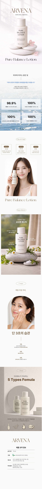

Pure Balance: Hydrating & Calming Skincare Landing Page
순수의 균형, 피부 본연의 휴식: 아르베나 수분 진정 로션 상세페이지
Product Detail
Design Point
- 1 감성적 브랜드 정체성 구축
- 'ARVENA' 브랜드가 지향하는 깨끗하고 순수한 이미지를 전달하기 위해 페이지 전반에 화이트와 소프트 그레이 톤을 메인으로 사용했습니다. 상단 히어로 섹션에 배치된 은은한 햇살 이미지와 차분한 누끼 컷은 브랜드의 고급스러운 분위기를 정의하며, 소비자에게 편안함과 신뢰를 주는 첫인상을 제공합니다.
- 2 핵심 효능의 시각화
- 제품의 가장 큰 특장점인 '수분 공급'과 '순한 성분'을 직관적으로 표현했습니다. 물결 이미지 위에 텍스트를 배치한 섹션은 즉각적인 청량감을 시각화하며, 식물 오브제와 스톤을 활용한 연출 컷은 자연 유래 성분의 건강함을 강조합니다. 이는 복잡한 성분 설명 없이도 제품의 성격을 명확히 전달하는 장치가 됩니다.
- 3 신뢰 중심의 정보 구조화
- 피부가 민감한 타겟 고객의 구매 결정을 돕기 위해 '임상 시험 결과'와 '성분 수치'를 명확한 모듈형 레이아웃으로 배치했습니다. '100%'와 같은 수치를 볼드하게 강조하고, 모델이 제품을 직접 사용하는 클로즈업 컷을 활용해 무자극 제품에 대한 신뢰도를 높였습니다. 이는 소비자에게 피부 안정성에 대한 확신을 심어줍니다.
- 4 체계적인 사용자 경험 설계
- 스크롤의 흐름에 따라 '감성 소구 -> 기능 설명 -> 신뢰 확인 -> 실사용 제안'의 구조로 정보의 하이라이키를 구성했습니다. 특히, 페이지 하단에 모델의 사용 팁과 제형을 보여주는 컷을 배치하여 소비자가 제품을 구매한 후의 긍정적인 경험을 미리 시각화하도록 돕고, 최종적인 구매 전환으로 이어지도록 유도했습니다.

